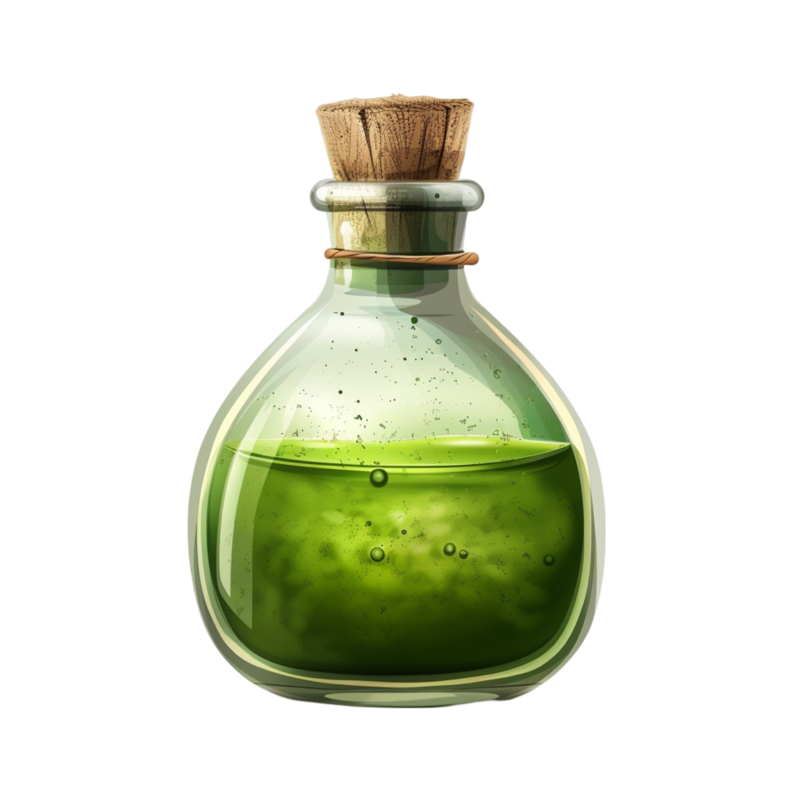

📘 Concepto:
Usamos if y elif para manejar múltiples decisiones. Cada condición se evalúa en orden hasta encontrar la primera verdadera.
🧠 Desafío:
Escribí la función beber_pocion(color) que devuelva:
"Recuperas energía"si el color es "verde""Te conviertes en un gato"si es "rojo""Has bebido veneno"si es "azul"- Para otro color:
"Eso no es una poción válida"